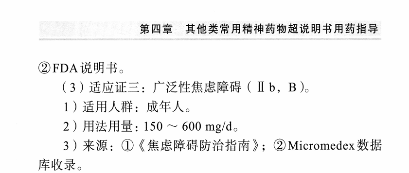

冰棍好烫喵 🍥🧊🍔🍟🍜🍣🍙🍧🍮🍩☕️💊🤤
@bghtnya
@Chiyuyu520 我之前发pr80教程推特给我号封了

池鱼鱼🍥
@Chiyuyu520
各位喜欢点菜也敢点菜的教一下点普瑞巴林
我个人经历是去第一人民医院挂神经内科然后那边直接说没有药 让我去三院（精神专科）去开
然后说法的话就是焦虑混合睡眠障碍，早晚各150mg
那时候在三院处方都要出来了因为需要家长打电话没点成
总之就是各位可以试试
普瑞巴林可以超说明书治睡眠障碍和焦虑 https://t.co/AzlsNu5l1E